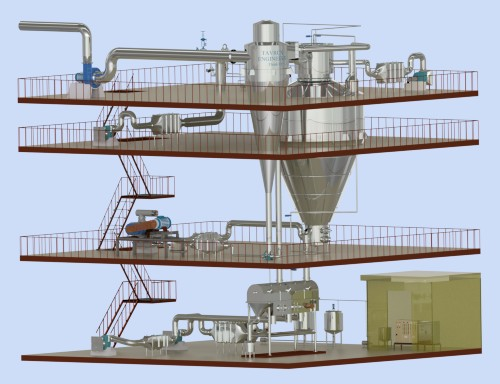
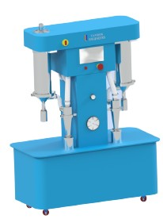
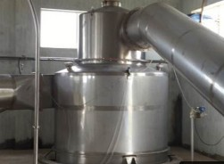
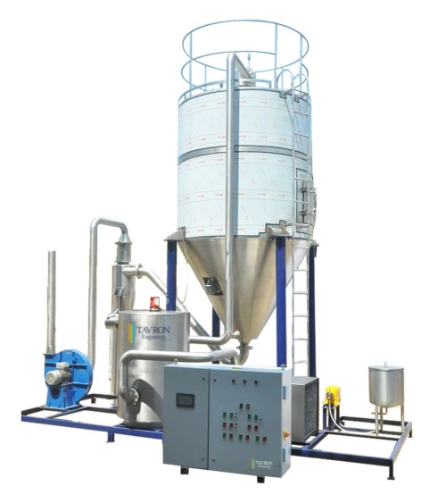
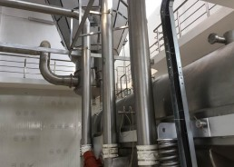

SPRAY DRYER
- Drying is the process of removing liquids from solids by evaporation.
- Spray Drying is a method of producing dry powder from liquid or slurry by rapidly drying with hot gas.
- One of the advantages of spray drying is the consistent particle size and moisture content.
- Spray Dryers are widely used in pharmaceutical and food industry.
- Tavron Spray Dryers are available in Capacity from 5 Kg / Hr to 1500 Kg/Hr Water Evaporation.
- They are available with Rotary Atomizer, Nozzle and Two fluid system.
- Material of construction SS 304 / SS 316.
- Second stage drying with Vibro Fluid Bed Dryer is available for thermal sensitive materials.
- Three Stage Drying with Stationery Fluid Bed and Vibro fluid bed can be provided.
- Available with the hot air producing system of steam, Direct or Indirect oil fired, Thermic fluid etc.
- Closed Loop Dryer is available on request for special application.
- Complete Auto control.
- Available with PLC and SCADA control.

ADVANTAGES OF TAVRON SPRAY DRYER
- Powder Quality remains constant throughout the production.
- They can be used for both heat resistant and heat sensitive.
- They can be designed at various size as per customer requirement.
- Product density and moisture content can be controlled.
- Varying Feed rates can be used.
- Designed in complete Automatic Controlled with PLC and SCADA.

APPLICATIONS
Some of the applications of spray dryer in various industries- Dairy Industries for milk powder, whey powder.
- Coffee and Tea Powders.
- Fruit Pulps, Juices and Pastes.
- Pharmaceutical Products like Algae Powder, Penicillin etc.

EFFICIENT CYCLONE SYSTEM
- Can be designed with Single / Multi Cyclone.
- For Efficient separation conveying air and product.
- Made out of SS 304 / SS 316 / Carbon steel.
- Additional Wet Scrubber and Bag filters are available to meet the local pollution standard.

LAB MODEL SRAY DRYER
- Capacity from 2 to 25 Kg / Hr Water Evaporation.
- Highly suitable for R&D and Education institution.
- Heating with Electrical Heater with other heating on option.
- Complete Auto control.
- Available with PLC control.

VIBRO FLUID BED
- Material of construction SS 304 / SS 316.
- Well-designed Coni form hole bed sheet
- Supported on spring loaded SS / MS legs.
- Easy removal for the Inspection of the product.